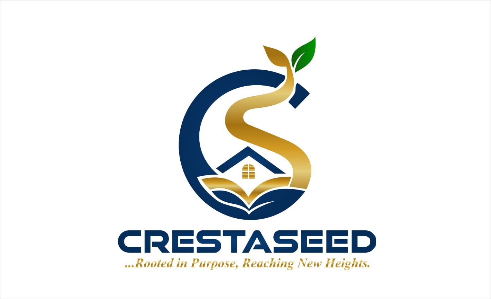

01 / CURRENT FOUNDATION
Agriculture
Beginning with five acres in Bong County and a nine-crop development portfolio, our priorities are disciplined production, market access, and a path toward processing.
Explore agricultureEMERGING ENTERPRISE / LIBERIA, WEST AFRICA
CrestaSeed is an emerging diversified enterprise developing long-term opportunities through agriculture, housing, and education.
Beginning with five acres of cultivated and prepared farmland in Bong County, we are establishing the foundation for a scalable agricultural business—and a phased vision for value-added production, housing, and practical education.
Preliminary discussions welcome. No investment terms or returns are being offered on this website.

01 / OUR BUSINESS MODEL
CrestaSeed is developing an integrated business model in which agriculture establishes the economic foundation, housing supports workforce and community stability, and education develops the human capital needed for sustained growth. Each pillar strengthens the others, creating opportunities for diversified revenue, operational resilience, and long-term value creation.
Beginning with five acres in Bong County and a nine-crop development portfolio, our priorities are disciplined production, market access, and a path toward processing.
Explore agricultureOur long-term housing strategy envisions affordable, durable homes that support workforce stability, strengthen communities, and create lasting property assets.
Explore housingWe plan to develop practical learning, skills training, entrepreneurship, and leadership opportunities that strengthen productivity and future generations.
Explore education02 / AGRICULTURAL FOUNDATION
Five acres of cultivated and prepared farmland mark the beginning, not the limit, of our agricultural ambition.
Our nine-crop development portfolio spans food staples and longer-term cash crops. The goal is to validate production, strengthen market access, and expand responsibly as operating performance and capital permit.
View agricultural portfolioPortfolio crops are at different stages of development; inclusion does not imply all are planted or producing.
03 / PROGRESS & MILESTONES
A transparent snapshot of our present foundation and future ambitions. Milestones will be updated as evidence and operational results become available.
Farmland in Bong County, Liberia forms the starting point for agricultural development.
Food staples and longer-term cash crops are being evaluated and developed at different stages; not all are in production.
Initial oil palm planting has taken place. CrestaSeed is working toward its target of 200 trees; completion is still pending.
Expansion into processing and additional business pillars remains conditional on performance, resources and partnerships.
Last content review: October 2026. Status descriptions are not audited operating results. View farm videos and oil palm seedlings →
Explore partnership pathways04 / GROWTH ROADMAP
Each stage depends on operational performance, market conditions, available resources, and responsible investment decisions.
Strengthen operations on five acres, assess crop productivity, and validate commercial opportunities.
Increase productive acreage, strengthen distribution, and build agricultural market partnerships.
Explore processing and manufacturing when production volumes and market conditions justify it.
Pursue complementary housing and education ventures as resources and opportunities permit.
05 / OUR PURPOSE
Mission: Building resilient foundations through agriculture, housing, and education. Our mission is to build resilient foundations by developing productive agricultural operations, pursuing sustainable housing opportunities, and investing in practical education and skills development. Through disciplined growth, responsible resource management, and strategic partnerships, we aim to create enduring business value, expand economic opportunities, and empower future generations.
Vision: A global model of sustainable and enduring success. We envision CrestaSeed as a globally recognized model of sustainable enterprise, showing how agriculture, housing, and education can work together to create lasting economic value. Starting in Liberia, we want to develop commercially viable businesses, strengthen communities, and establish an integrated model capable of responsible growth and replication across markets.
Read our vision and missionGROW WITH CRESTASEED
We welcome conversations with prospective investors, agricultural businesses, development institutions, and strategic partners interested in exploring sustainable opportunities in Liberia.
Any investment arrangement would be subject to due diligence, documentation, and applicable legal requirements.